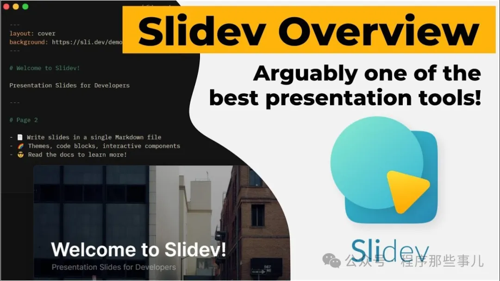
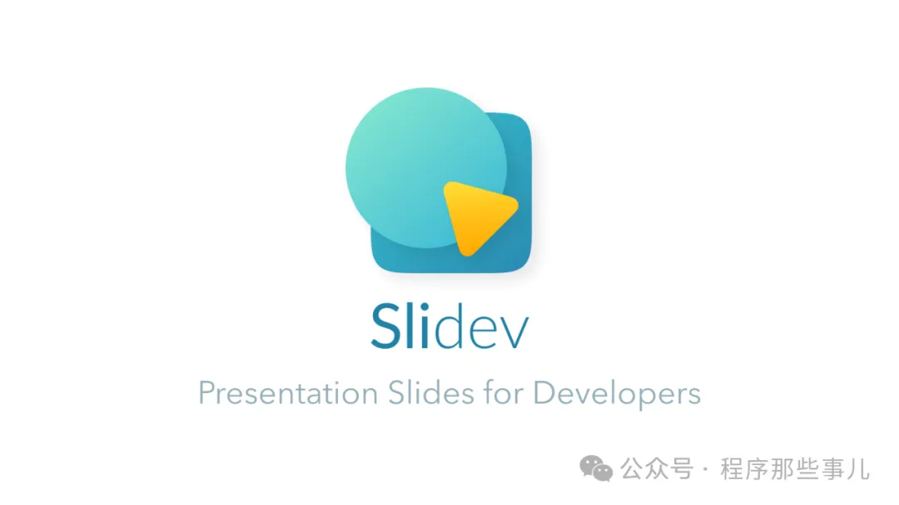
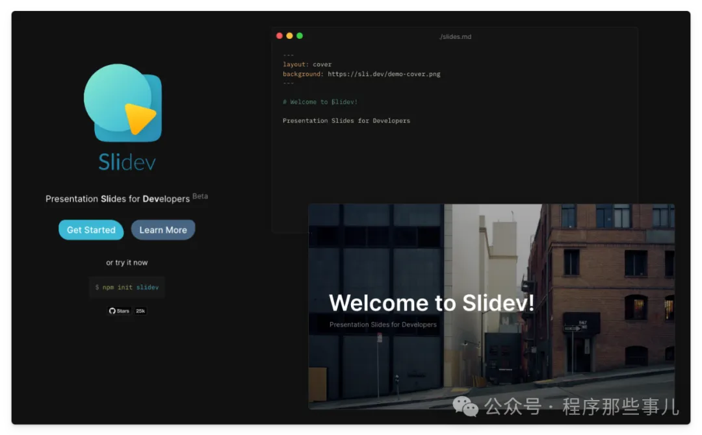
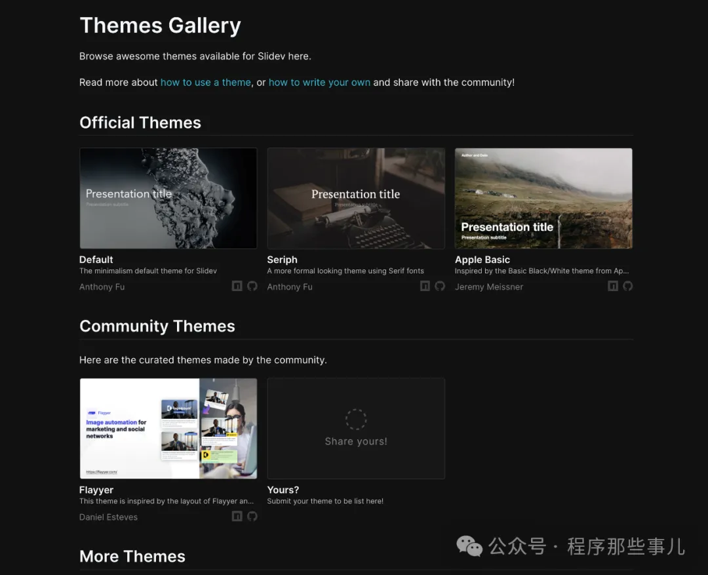

数字化时代，演示和演讲已经成为传递信息的重要方式。然而，传统的幻灯片制作工具往往缺乏灵活性和交互性，限制了创意的发挥。Slidev，一个为开发者设计的基于 Web 的幻灯片制作工具，以其独特的优势和功能，正在改变这一现状。
Slidev 的设计初衷是为开发者提供一个既熟悉又强大的演示平台。它支持 Markdown 语法，让开发者能够专注于内容的创作，而不是格式的调整。同时，Slidev 集成了丰富的开发者友好特性，如代码片段的高亮显示、实时编码等，使得技术演讲更加生动和专业。
与传统的幻灯片工具不同，Slidev 不仅仅局限于静态的展示。它支持交互式元素，如图表的动态展示、数据的实时更新等，让演示更加生动和吸引人。此外，Slidev 的幻灯片可以在浏览器中自由定制和扩展，几乎没有什么效果是不可能的。
Slidev 的设计哲学是渐进式的。用户可以从一个简单的 Markdown 文件开始，逐步引入 Slidev 的内置功能，如动画、布局、主题等。这种设计既适合初学者快速上手，也能满足高级用户对个性化和定制化的需求。
Slidev 提供了丰富的主题和插件，用户可以根据自己的喜好和需求进行选择和安装。这些主题和插件不仅可以改变幻灯片的外观，还可以增加新的功能和交互方式。
Slidev 的编辑器与浏览器之间实现了实时同步，用户在编辑器中的每一次修改都会立即反映在浏览器中，无需手动刷新。这种快速响应大大提高了演示文稿的制作效率。
Slidev 的幻灯片支持跨平台使用，无论是 Windows、macOS 还是 Linux，都可以轻松创建和展示。此外，用户还可以将幻灯片导出为 PDF、PPTX 或图片格式，甚至可以编译为静态网页，方便分享和部署。
Slidev 内置了录制功能，用户可以在演示过程中录制屏幕和摄像头视图，方便事后回顾或分享。这一功能特别适合在线教育和远程工作场景。
Slidev 不仅仅是一个幻灯片制作工具，它是一个全新的演示平台，为开发者和创意工作者提供了无限的可能性。如果你厌倦了传统工具的限制，渴望在演示中展现更多的个性和创意，那么 Slidev 绝对是你不可错过的选择。